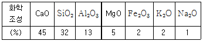
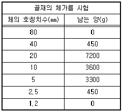
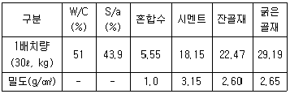
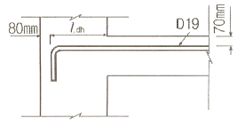
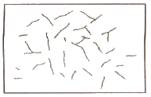
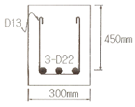
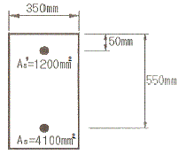
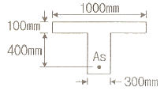
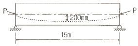

콘크리트기사 (2009-07-26 기출문제)
1과목: 재료 및 배합
1. 일반적인 콘크리트용 잔골재는 염분함유량(NaCl환산량)을 질량백분율로 몇 % 까지 허용하는가?
- 0.02
- 0.04
- 0.06
- 0.08
(정답률: 알수없음)

2. 콘크리트용 혼화재료로 실리카 퓸을 사용한 콘크리트의 특성에 대한 설명으로 적당하지 않는 것은?
- 포졸란 반응으로 강도증진 효과가 뛰어나다.
- 마이크로 필러(micro filler)효과로 압축강도 발현성이 크다.
- 목표 슬럼프를 유지하기 위해 소요되는 단위수량이 크게 감소하여 강도증진 효과가 뛰어나다.
- 재료분리 저항성, 수밀성, 내화학약품성이 향상된다.
(정답률: 알수없음)
3. AE 감수제에 대한 설명 중 적절하지 않은 것은?
- 시멘트 분산작용과 공기연행작용이 합성되어 단위수량을 크게 감소시킨다.
- 응결특성을 변화시키는 지연형, 촉진형과 응결특성에 영향이 없는 표준형으로 분류된다.
- 수밀성이 향상되고 투수성이 감소된다.
- 공기연행작용으로 건조수축이 증가된다.
(정답률: 알수없음)
4. 콘크리트 배합설계 시 잔골재율 선정에 관한 내용중 옳지 않은 것은?
- 잔골재율은 사용하는 잔골재의 입도, 콘크리트의 공기량, 단위시멘트량, 혼화재료의 종류 등에 따라 다르므로 시험에 의해 정한다.
- 잔골재율은 소요의 워커빌리티를 얻을 수 있는 범위 내에서 단위수량이 최소가 되도록 시험에 의해 정한다.
- 고성능 AE감수제를 사용한 콘크리트의 경우 물-시멘트비 및 슬럼프가 같으면, 일반적인 AE감수제를 사용한 콘크리트와 비교하여 잔골재율을 3~4%정도 작게 하는 것이 좋다.
- 콘크리트 펌프시공의 경우에는 콘크리트 펌프의 성능, 배관, 압송거리 등에 따라 적절한 잔골재율을 시험에 의해 결정한다.
(정답률: 알수없음)
5. KS F 2563(콘크리트용 고로슬래그 미분말)의 규정에 의해 화학조성이 다음과 같은 고로 수쇄슬래그의 염기도를 계산하면 약 얼마인가?

- 2.3
- 2.0
- 1.4
- 0.9
(정답률: 알수없음)
6. 화학 혼화제의 품질시험 항목으로 옳지 않은 것은?
- 블리딩양의 비(%)
- 길이 변화비(%)
- 동결 융해에 대한 저항성(상대 동탄성 계수 %)
- 휨강도의 비(%)
(정답률: 80%)
7. 다음은 골재 15000g에 대하여 체가름 시험을 수행한 결과이다. 이골재의 조립률은?

- 3.12
- 4.12
- 6.26
- 7.26
(정답률: 알수없음)
8. 밀도 2.5g/cm3, 함수율 8%, 혼수율 3%인 잔골재의 표면수율은 얼마인가?(오류 신고가 접수된 문제입니다. 반드시 정답과 해설을 확인하시기 바랍니다.)
- 4.41%
- 4.63%
- 4.85%
- 5.00%
(정답률: 34%)
9. 레디믹스트 콘크리트의 배합에서 사용하는 배합수 중 회수수의 사용에 있어 염소 이온(Cl-)의 양은 얼마로 규정하고 있는가?
- 50mg/L 이하
- 100mg/L 이하
- 150mg/L 이하
- 250mg/L 이하
(정답률: 알수없음)
10. KS규정의 시멘트 시험에 대한 설명으로 부적절한 것은?
- 분말도는 시멘트의 입자 크기를 비표면적으로 나타내는 것으로써 블레인 공기 투과 장치에 의해 측정할 수 있다.
- 강열감량은 일반적으로 시멘트를 약 1450℃로 가열했을 때의 감소되는 질량을 측정하여 백분율로 나타낸다.
- 시멘트의 강도 시험용 모르타르의 배합은 시멘트:표준시 = 1:3, 물/시멘트비는 0.5 이다.
- 길모어 침에 의한 응결시간은 사용한 물의 양이나 온도 또는 반죽의 반죽 정도뿐만 아니라 공기의 온도 및 습도에도 영향을 받으므로 측정한 시멘트의 응결시간은 근사값 이다.
(정답률: 알수없음)
11. 포틀랜드 시멘트를 화학 분석한 결과 Na2O가 0.3% 및 K2O가 1.2% 이다. 이 시멘트의 총알칼리량은? (단, Na, K 및 0의 원자량은 각각 23.0, 39.1 및 16.0이다.)
- 1.09%
- 0.92%
- 0.82%
- 1.20%
(정답률: 알수없음)
12. 다음의 콘크리트 배합에 관한 일반적인 사항으로 잘못 설명된 것은?
- 잔골재율을 작게 하면 소요의 워커빌리티를 가지는 콘크리트를 얻기 위하여 필요한 단위수량 및 단위시멘트량이 감소되어 경제적으로 된다.
- 시방배합에서 잔골재 및 굵은골재는 각각 표면건조포화 상태로서 나타낸다.
- 공사 중에 잔골재의 조립률이 ± 0.2 이상 차이가 있을 경우에는 콘크리트의 워커빌리티가 변하므로 배합을 수정할 필요가 있다.
- 굵은골재 최대치수는 철근 순간격의 3/4 이하이어야 하며, 콘크리트를 경제적으로 만들기 위해서는 최대치수가 작은 굵은골재를 사용하는 것이 유리하다.
(정답률: 알수없음)
13. 콘크리트 시방배합 설계에서 단위골재의 절대용적이 0.678m3이고, 잔골재율이 40%, 굵은골재의 표건밀도가 2.65g/cm3인 경우 단위굵은골재량으로 적당한 것은?
- 719kg
- 1078kg
- 1136kg
- 1462kg
(정답률: 알수없음)
14. 고강도콘크리트의 배합에 관한 설명으로 잘못된것은?
- 유동성을 향상시키고 배합시의 단위수량을 줄이기 위해 고성능 감수제를 사용한다.
- 플라이애시 등의 혼화재를 사용하면 시멘트량이 상대적으로 줄어들기 때문에 장기적인 소요강도를 얻기가 힘들다.
- 기상의 변화가 심하거나 동결융해에 대한 대책이 필요한 경우를 제외하고는 AE제를 사용하지 않는 것을 원칙으로 한다.
- 고강도콘크리트의 단위시멘트량은 소요 워커빌리티와 강도가 얻어지는 범위에서 가능한 적게 되도록 한다.
(정답률: 알수없음)
15. 플라이 애시의 품질 시험에서 시험 모르타르 제조시 보통 포틀랜드 시멘트와 플라이 애시의 질량비는 얼마인가? (단, 보통 포틀랜드 시멘트 : 프라이 애시)
- 1 : 1
- 2 : 1
- 1 : 2
- 3 : 1
(정답률: 알수없음)
16. 풍화한 시멘트의 특징을 나타낸 것 중 잘못된 것은?
- 강열감량 감소
- 비중 저하
- 응결 지연
- 강도발현 저하
(정답률: 알수없음)
17. 콘크리트의 시방배합을 현장배합으로 보정하려고 할 때 필요한 시험은?
- 골재의 표면수율 시험
- 시멘트 모르타르 플로우 시험
- 골재의 비중시험
- 시멘트 비중시험
(정답률: 알수없음)
18. 시멘트 제조의 클링커 광물 중에서 고용체 형태로 결정화되며, 체적 증가를 동반하므로 최대 사용량을 5%이하로 제한하는 성분은 무엇인가?
- 알칼리 금속산화물(K2O, Na2O)
- 유리석회(CaO)
- 마그네시아(MgO)
- 석고
(정답률: 알수없음)
19. fck=24MPa로 배합한 콘크리트 공시체 20개에 대한 압축강도 시험 결과, 시험횟수 20회에 대한 압축강도의 표준편차가 3.0MPa이었다. 이 콘크리트의 배합강도는?
- 28.⑤ MPa
- 28.15 MPa
- 28.35 MPa
- 28.66 MPa
(정답률: 알수없음)
20. 시멘트에 관한 다음의 설명 중 옳은 것은?
- 시멘트의 풍화는 대기 중의 탄산가스와의 직접적인 반응에 의해 일어난다.
- 비표면적이 큰 시멘트 일수록 수화반응이 늦어진다.
- C3A 성분이 많은 포틀랜드시멘트일수록 화학저항성이 크다.
- 조강성(早强性) 포틀랜드시멘트는 일반적으로 C3S의 양이 많고 C2S의 양이 적다.
(정답률: 알수없음)
2과목: 제조, 시험 및 품질관리
21. 프록터 관입저항시험으로 콘크리트의 응결시간을 측정할 때 초결시간 및 종결시간은 관입저항값이 각각 몇 MPa일 때인가?
- 2.5MPa , 25.0MPa
- 2.5MPa , 28.0MPa
- 3.5MPa , 25.0MPa
- 3.5MPa , 28.0MPa
(정답률: 알수없음)
22. 콘크리트의 슬럼프 시험방법을 설명한 것으로 틀린 것은?
- 시료를 거의 같은 양으로 3층으로 나누어 채우고 각 층은 다짐봉으로 고르게 25회 똑같이 다진다.
- 다짐봉의 다짐깊이는 앞 층에 거의 도달할 정도로 다진다.
- 재료분리가 발생할 염려가 있는 경우에는 다짐수를 줄일 수 있다.
- 슬럼프콘을 들어 올리는 시간은 높이 300mm에서 4~5초로 한다.
(정답률: 알수없음)
23. 레디믹스트 콘크리트 품질에 대한 기준으로서 옳지 않은 것은?
- 염화물 함유량은 염소 이온(Cl-)량으로서 일반적인 경우 0.3kg/m3이하로 한다.
- 1회의 강도시험 결과는 구입자가 지정한 호칭 강도값의 95% 이상이어야 한다.
- 3회의 강도시험 결과의 평균치는 구입자가 지정한 호칭 강도값 이상이어야 한다.
- 공기량은 보통콘크리트의 경우 4.5 %이며, 그 허용오차는 ± 1.5 %로 한다.
(정답률: 알수없음)
24. 알칼리-골재반응에 대한 설명으로 틀린 것은?
- 알칼리-실리카반응을 일으키기 쉬운 광물은 오팔, 트리디마이트, 옥수 등이다.
- 반응성 골재를 사용할 경우 전 알칼리량 0.6% 이하인 저알칼리형 시멘트를 사용한다.
- 플라이애시, 고로슬래그 미분말 등은 실리카질이 많기 때문에 알칼리 골재 반응을 촉진한다.
- 골재의 알칼리 잠재반응 시험은 모르타르 봉 방법으로 평가한다.
(정답률: 30%)
25. 어느 레미콘 공장의 콘크리트 압축강도 시험결과 표준편차가 1.5 MPa 이었고, 압축강도의 평균값이 39.6MPa 이었다면 이 콘크리트의 변동계수는 얼마인가?
- 2.8%
- 3.8%
- 4.5%
- 5.5%
(정답률: 알수없음)
26. 일반콘크리트에 사용되는 시멘트, 혼합수 및 골재 등의 재료에 대한 품질관리 시기 및 횟수에 관한 설명으로 옳지 않은 것은?
- 시멘트 – 공사 시작 전, 공사 중, 1회/월 이상 및 장기간 저장한 경우
- 상수도수 – 공사 시작 전
- 부순모래 – KS F 2527에 규정된 항목에 대해 공사 시작 전, 공사 중 1회/월 이상 및 산지가 바뀐 경우
- 강자갈 – 알칼리 실리카 반응성의 항목에 대해 1회/월 이상 및 산지가 바뀐 경우
(정답률: 알수없음)
27. 다음은 레디믹스트 콘크리트의 슬럼프 및 슬럼프플로 허용오차 범위를 나타낸 것이다. 잘못된 것은?
- 슬럼프 25mm : ± 10mm
- 슬럼프 80mm 이상 : ± 20mm
- 슬럼프 플로 500mm : ± 75mm
- 슬럼프 플로 600mm : ± 100mm
(정답률: 알수없음)
28. 콘크리트의 블리딩에 관한 설명으로 틀린 것은?
- 일종의 재료분리 현상이다.
- 잔골재의 조립률이 클수록 블리딩이 작아진다.
- 단위수량이 큰 배합일수록 블리딩이 많아진다.
- AE제를 사용하면 단위수량을 감소시켜서 블리딩을 줄 일 수 있다.
(정답률: 알수없음)
29. 콘크리트의 초기 균열에 관한 설명으로 옳지 않은 것은?
- 침하에 의한 균열은 콘크리트 치기 후 1~3시간 정도에서 보의 상단부 또는 슬래브면 등에서 철근의 위치에 따라 발생한다.
- 침하균열은 슬럼프가 클수록, 콘크리트 치기속도가 빠를수록 증가 한다.
- 플라스틱 균열은 콘크리트 타설시 또는 직후에 표면에 급속한 수분증발로 인하여 콘크리트 표면에 생기는 미세한 균열이다.
- 굳지 않은 콘크리트의 건조수축은 일반적으로 고온다습한 외기에 노출될 때 발생이 증가되며, 양생이 시작된 직후에 나타난다.
(정답률: 알수없음)
30. 골재의 체가름 시험으로부터 파악할 수 없는 사항은?
- 입도 분포
- 조립률(fineness modulus)
- 단위 용적질량
- 굵은 골재의 최대치수
(정답률: 알수없음)
31. 콘크리트의 품질관리의 관리도에서 계수값 관리도에 포함되지 않는 것은?
- p 관리도
- c 관리도
- u 관리도
- x 관리도
(정답률: 알수없음)
32. 콘크리트 휨감도 시험에서 공시체에 하중을 가하는 속도는 가장자리 응력도의 증가율이 매초 얼마 정도가 되도록 하여야 하는가?
- 4± 0.6MPa
- 6± 0.4MPa
- 0.6± 0.4MPa
- 0.06± 0.04MPa
(정답률: 알수없음)
33. 콘크리트의 공기량을 감소시키는 요인으로 적합하지 않는 것은?
- 콘크리트의 온도 상승
- 잔골재 중의 0.15~0.60mm 입자 증가
- 잔골재율 감소
- 플라이 애쉬 사용
(정답률: 알수없음)
34. 콘크리트의 비비기에 대한 설명 중 옳지 않은 것은?
- 비비기는 미리 정해 둔 비비기 시간의 3배 이상 계속 해서는 안된다.
- 연속믹서를 사용하면 비비기 시작 후 최초에 배출되는 콘크리트를 사용할 수 있다.
- 비비기 시간은 시험에 의해 정하는 것을 원칙으로 한다.
- 재료를 믹서에 투입하는 순서는 믹서의 형식, 비비기 시간 등에 따라 다르기 때문에 시험의 결과 또는 실적을 참고로 정한다.
(정답률: 알수없음)
35. 최근 들어 자연모래의 수급이 원활하지 못하여 부순모래(crushed sand)의 사용이 증가하고 있다. 다음중 부순 모래 및 부순 모래를 사용한 콘크리트에 대한 설명으로 적절하지 않은 것은?
- 암석을 파쇄기로 부수어 인공적으로 만든 모래를 부순모래라고 하며, 부순 모래에 일정비의 자연산 모래를 혼합한 모래를 혼합모래라고 한다.
- 부순 모래를 사용하는 콘크리트는 유동성 및 단위수량에 영향을 미치므로 입형판정 실적율 시험을 실시해야 하며, 그 기준은 53% 이상이어야 한다.
- 부순 모래에 포함된 미분량(0.08mm체 통과량)은 단위수량을 증가시켜 동일한 유동성에서 수축량을 크게 할 수 있으므로 시방서에서는 3% 이하로 제한하고 있다.
- 부순 모래의 흡수율이 크면 기후 변화에 따라 동결 융해 작용을 일으킬 수 있으므로, 그 기준을 3% 이하로 규정하고 있다.
(정답률: 알수없음)
36. 레디믹스트 콘크리트 제조시 각 재료의 측정단위 및 계량 허용오차를 나타낸 것이다. 틀린 것은?
- 시멘트(질량) : ± 1%
- 골재(질량) : ± 3%
- 혼화제(질량 또는 부피) :± 2%
- 물(질량 또는 부피) : ± 1%
(정답률: 알수없음)
37. 다음은 강도시험용 공시체의 제작 방법에 대하여 설명한 것이다. 틀린 것은?
- 콘크리트의 압축강도 시험용 공시체의 지름은 굵은 골재 최대치수의 3배이상, 15cm 이상으로 한다.
- 휨강도 시험용 공시체의 한 변의 길이는 굵은골재 최대치수의 4배 이상, 10cm 이상으로 한다.
- 휨강도 시험용 공시체의 길이는 단면의 한 변의 길이의 3배 보다 8cm 이상 긴 것으로 한다.
- 쪼갬인장강도 시험용 공시체의 지름은 굵은골재 최대치수 4배이상, 15cm 이상으로 한다.
(정답률: 알수없음)
38. 보통 콘크리트와 비교할 때 AE 콘크리트의 특성이 아닌 것은?
- 워커빌리티(workability)의 증가
- 동결 융해에 대한 저항성 증가
- 단위 수량 감소
- 잔골재율 증가
(정답률: 알수없음)
39. 콘크리트의 공기량 측정시 흡수율이 큰 골재의 경우 골재낱알의 흡수가 시험결과에 큰 영향을 미치므로 골재의 수정계수를 측정하여야 한다. 다음과 같은 1배치 배합에 대하여 압력방법(위싱턴형 공기량 측정기, KS F 2421)에 의한 수정계수를 구할 때 필요한 잔골재 및 굵은골재량을 구하면? (단, 공기량 시험기의 용적은 6ℓ로 한다.)

- 잔골재=3.5kg, 굵은골재=4.8kg
- 잔골재=4.5kg, 굵은골재=5.8kg
- 잔골재=5.5kg, 굵은골재=6.8kg
- 잔골재=6.5kg, 굵은골재=7.8kg
(정답률: 50%)
40. 콘크리트의 내구성에 관한 일반적인 설명 중 옳지 않은 것은?
- 동결융해작용에 대한 저항성을 증가시키기 위해 물-시멘트비가 작은 콘크리트나 AE콘크리트를 사용하는 것이 좋다.
- 콘크리트의 중성화는 공기중의 탄산가스의 농도가 높을수록 또한 온도가 낮을수록 중성화 속도는 빨라진다.
- 황산염은 각종 공업원료 및 비료로서 널리 사용되고 있고 온천 및 하천수에도 함유되어 있어 콘크리트를 열화시킨다.
- 콘크리트는 자체가 강한 알칼리성이기 때문에 농도가 높은 황산이나 염산에 대해서는 침식이 된다.
(정답률: 알수없음)
3과목: 콘크리트의 시공
41. 수중콘크리트에 대한 설명으로 틀린 것은?
- 일반 수중콘크리트의 물-시멘트비는 55%이하, 단위시멘트량은 350kg/m3이상으로 한다.
- 일반 수중콘크리트는 수중 시공시의 강도가 표준공시체 강도의 0.6~0.8배가 되도록 배합강도를 설정한다.
- 지하연속벽에 사용하는 수중콘크리트의 경우, 지하 연속벽을 가설만으로 이용할 경우에는 단위시멘트량은 300kg/m3 이상으로 하는 것이 좋다.
- 수중콘크리트 타설시 완전히 물막이를 할 수 없는 경우에는 유속은 1초간 50mm 이하로 하여야 한다.
(정답률: 알수없음)
42. 숏크리트의 작업에 대한 설명 중 옳지 않은 것은?
- 소정의 두께가 될 때까지 반복해서 뿜어 붙여야 한다.
- 노즐은 항상 뿜어 붙일 면에 직각이 되도록 뿜어 붙이는 것이 원칙이다.
- 수밀한 시공을 위해 급결제는 사용하지 않는 것을 원칙으로 한다.
- 강제지보공을 설치한 곳에 뿜어 붙이기를 할 경우에는 숏크리트와 강제 지보공이 일체가 되도록 한다.
(정답률: 알수없음)
43. 고강도콘크리트 배합 및 비비기에 관한 설명으로 옳지 않은 것은?
- 고강도콘크리트의 물-시멘트비는 일반적으로 50%이하로 한다.
- 단위시멘트량은 소요강도 및 워커빌리티를 얻을 수 있는 범위 내에서 가능한 한 적게 되도록 시험에 의해 정하여야 한다.
- 슬럼프값은 150mm 이하로 하고, 유동화 콘크리트로 할 경우에는 210mm 이하로 한다.
- 믹서에 재료를 투입할 때 고성능 감수제는 혼합수와 동시에 투여해야 한다.
(정답률: 알수없음)
44. 숏크리트 코어 공시체(ø10 × 10cm)부터 채취한 강섬유의 질량이 61.2g이었다. 강섬유 혼입률을 구하면? (단, 강섬유의 단위질량은 7.85g/cm3)
- 0.5%
- 1%
- 3%
- 5%
(정답률: 알수없음)
45. 매스콘크리트로 다루어야 하는 구조물 부재치수의 일반적인 표준값으로 옳은 것은?
- 넓이가 넓은 평판구조에서는 구께 0.8m 이상, 하단이 구속된 벽체에서는 두께 0.5m 이상
- 넓이가 넓은 평판구조 및 하단이 구속된 벽체에서 두께 0.8m 이상
- 넓이가 넓은 평판구조에서는 두께 0.5m 이상, 하단이 구속된 별체에서는 두께 0.8m 이상
- 넓이가 넓은 평판구조 및 하단이 구속된 벽체에서 두께 0.5m 이상
(정답률: 알수없음)
46. 유동화 콘크리트의 제조방식 중 유동화에 가장 효과적인 방법은?
- 레미콘 공장에서 유동화제를 첨가하고 공장에서 유동화하는 방법
- 레미콘 공장에서 유동화제를 첨가하고 현장에서 유동화하는 방법
- 현장에서 유동화제를 첨가하고 레미콘 공장에서 유동화하는 방법
- 현장에서 유동화제를 첨가하고 현장에서 유동화하는 방법
(정답률: 알수없음)
47. 매스콘크리트의 온도균열 발생에 대한 검토는 온도균열지수에 의해 평가하는 것을 원직으로 하고 있다. 만약, 연질의 지반위에 타설된 평판구조 등과 같이 내부구속응력이 큰 구조물에서 ⊿Tt(내부온도가 최고일 때 내부와 표면과의 온도차)가 12.5℃ 발생하였다면 간이적인 방법으로 온도균열지수를 구하면?
- 0.8
- 1.2
- 1.5
- 2.0
(정답률: 알수없음)
48. 콘크리트용 내부 진동기의, 사용방법에 관한 설명으로 틀린 것은?(오류 신고가 접수된 문제입니다. 반드시 정답과 해설을 확인하시기 바랍니다.)
- 진동다지기를 할 때에는 내부진동기를 하층 콘크리트속으로 0.1m 정도 찔러 넣는다.
- 재 진동을 할 경우에는 초결이 일어난 것을 확인한 후 실시한다.
- 1개소당 진동시간은 5~15초로 한다.
- 내부진동기는 연직으로 찔러 넣으며, 삽입간격은 일반적으로 0.5m 이하로 하는 것이 좋다.
(정답률: 30%)
49. 팽창콘크리트의 팽창률은 일반적으로 재령 몇 일의 시험치를 기준으로 하는가?
- 3일
- 7일
- 28일
- 90일
(정답률: 67%)
50. 프리팩트콘크리트용 주입모르터의 품질기준으로 틀린 것은?
- 유하시간의 설정값은 16~20초를 표준으로 한다.
- 팽창률의 설정값은 시험 시작 후 3시간에서의 값이 5~10%인 것을 표준으로 한다.
- 블리딩률의 설정값은 시험 시작 후 3시간에서의 값이 3% 이하가 되는 것으로 한다.
- 압축강도는 28일의 강도가 30MPa이상을 기준으로 한다.
(정답률: 알수없음)
51. 경량골재 콘크리트에 대한 설명으로 옳은 것은?
- 경량골재 콘크리트의 공기량은 보통골재을 사용한 콘크리트보다 1% 크게 해야 한다.
- 경량골재 콘크리트는 AE제를 사용하지 않는 것을 원칙으로 한다.
- 콘크리트를 타설 할 때에는 경량골재가 침하하고, 모르타르가 위로 떠오르는 재료분리가 발생하기 쉽다.
- 내부진동기로 다질 때 보통골재콘크리트에 비해 찔러넣는 간격을 크게 하거나 진동시간을 약간 짧게하여 다짐을 하여야 한다.
(정답률: 알수없음)
52. 콘크리트의 건식법에 대한 설명으로 잘못된 것은?
- 일반적인 압송거리는 습식법에 비하여 장거리 수송이 전달하지 못하며 100m정도에 한정되어 사용된다.
- 시공 도중에 분진발생이 많고 골재가 튀어나오는 등의 단점이 있다.
- 습식법에 비하여 작업원의 능력과 숙련도에 따라 품질이 크게 좌우된다.
- 건식법은 시멘트와 골재를 건비빔(dry mix)시켜서 노즐까지 보내어 여기서 물과 합류시키는 공법이다.
(정답률: 알수없음)
53. 신축이음에 대한 설명으로 부적절한 것은?
- 신축이음은 양쪽의 구조물 혹은 부재가 구속되지 않는 구조이어야 한다.
- 신축이음에는 필요에 따라 줄눈재, 지수판 등을 배치하여야 한다.
- 신축이음의 단차를 피할 필요가 있는 경우에는 장부나 홈을 두든가 전단 연결재를 사용하는 것이 좋다.
- 수밀이 필요한 구조물에서는 신축성이 없는 지수판을 사용해야 한다.
(정답률: 70%)
54. 콘크리트제품의 증기양생 방법에 대한 일반적인 설명으로 틀린 것은?
- 거푸집과 함께 증기양생실에 넣어 양생온도를 균등하게 올린다.
- 비빈후 2~3시간 이상 경과된 후에 증기양생을 실시한다.
- 온도상승속도는 1시간당 60℃ 이하로 하고 최고온도는 200℃ 로 한다.
- 양생실의 온도는 서서히 내려 외기의 온도와 큰 차가 없도록 하고 나서 제품을 꺼낸다.
(정답률: 알수없음)
55. 매스콘크리트의 시공에 있어서 유의해야 할 사항중 옳지 않은 것은?
- 매스콘크리트의 배합시 단위시멘트량을 되도록 적게 한다.
- 파이프쿨링시 파이프 주변의 콘크리트 온도와 통수 온도와의 차이에 대한 척도는 보통 20℃ 이하 이다.
- 타설시간 간격은 외기온이 25℃이상에서는 120분으로 한다.
- 콘크리트 타설의 한층의 높이는 0.4~0.5m를 표준으로 한다.
(정답률: 알수없음)
56. 서중콘크리트 제조 및 시공에 대한 설명으로 잘못된 것은?
- 일반적으로 기온 10℃의 상승에 대하여 단위수량은 2~5% 증가한다.
- 콘크리트를 타설할 때의 콘크리트 온도는 25℃를 넘지 않도록 하여야 한다.
- KS F 2560의 지연형 감수제를 사용하는 등의 일반적인 대책을 강구한 경우에도 1.5시간 이내에 타설하여야 한다.
- 타설후 적어도 24시간은 노출면이 건조하지 않도록 하고 양생은 적어도 5일 이상 실시한다.
(정답률: 알수없음)
57. 콘크리트 공장제품에 사용되는 굵은골재의 최대치수에 관한 기준으로 옳은 것은?
- 굵은골재의 최대치수는 25mm이하이고 공장제품 최소두께의 4/5 이하이며, 또한 강재의 최소간격의 2/5를 넘어서는 안 된다.
- 굵은골재의 최대치수는 25mm이하이고 공장제품 최소두께 1/3 이하이며, 또한 강재의 최소간격의 2/3를 넘어서는 안 된다.
- 굵은골재의 최대치수는 40mm이하이고 공장제품 최소두께의 2/3 이하이며, 또한 강재의 최소간격의 1/3를 넘어서는 안 된다.
- 굵은골재의 최대치수는 40mm이하이고 공장제품 최소두께의 2/5 이하이며, 또한 강재의 최소간격의 4/5를 넘어서는 안 된다.
(정답률: 알수없음)
58. 콘크리트 펌프 운반에 대한 설명으로 틀린 것은?
- 콘크리트 펌프 운반시 슬럼프 값이 클수록, 수송관 직경이 클수록 수송관내 압력손실은 작아진다.
- 펌퍼빌리티가 좋은 굳지 않은 콘크리트란 직선관속을 활동하는 유동성, 곡관이나 테이퍼관을 통과할 때의 변형성, 관내 압력의 시간적, 위치적 변동에 대한 분리 저항성의 3가지 성질을 균형있게 유지하는 것이다.
- 일반적으로 수평관 1m당 관내압력손실에 수평환산거리를 곱한 값이 콘크리트 펌프의 최대 이론 토출압력의 80% 이하가 되도록 한다.
- 펌퍼빌리티는 슬럼프와 공기량 시험에 의하여 판정할 수 있다.
(정답률: 알수없음)
59. 벽 또는 기둥과 같이 높이가 높은 콘크리트를 연속해서 타설하는 경우 쳐올라가는 속도는 단면의 크기, 콘크리트배합, 다지기 방법에 따라 다르므로 현장여건에 맞게 적절히 조절해야 한다. 다음 중 일반적인 경우 벽 또는 기둥의 콘크리트 타설속도로 가장 적당한 것은?
- 30분에 0.5~1.0m
- 30분에 1.0~1.5m
- 30분에 1.5~2.0m
- 30분에 2.0~2.5m
(정답률: 알수없음)
60. 콘크리트 타설에 대한 설명 중 틀린 것은?
- 외기온이 25℃를 초과할 경우 허용 이어치기 시간 간격은 2.0 시간이다.
- 외기온이 25℃이하일 경우 허용 이어치기 시간간격은 2.5 시간이다.
- 콘크리트 타설도중 표면에 떠올라 고인 물은 콘크리트 표면에 홈을 만들어 흐르게 하는 등의 조치를 통하여 이를 제거한다.
- 한 구획내의 콘크리트는 타설이 완료될 때까지 연속해서 타설해야 한다.
(정답률: 알수없음)
4과목: 구조 및 유지관리
61. 표준갈고리를 갖는 인장이형철근 D19(db=19.1mm)이 그림과 같이 배치되어 있을 때 정착길이(ldh)를 구하면? (단, fck=21MPa, fy=400MPa, 피복두께로 인한 보정계수는 0.7을 사용하며, 기타의 보정계수는 무시한다.)

- 247mm
- 292mm
- 330mm
- 412mm
(정답률: 알수없음)
62. 콘크리트에 그림과 같은 균열이 발생한 경우 균열 원인으로서 가장 관계가 깊은 것은?

- 시멘트 이상응결
- 소성수축균열
- 콘크리트 충전불량
- 블리딩
(정답률: 알수없음)
63. 그림과 같은 단면을 가지는 직사각형보의 공칭 전단강도 Vn를 계산하면? (단, 철근 D13을 수직스터럽으로 사용하며, 스터럽 간격은150mm 이다. 철근 D13 1본의 단면적은 127mm2, D22 1본의 단면적은 387mm2, fck=24MPa, fy=400MPa이다.)

- 415kN
- 358kN
- 273kN
- 208kN
(정답률: 알수없음)
64. 콘크리트구조설계기준에서 규정하고 있는 철근의 간격에 대한 설명 중 옳은 것은?
- 동일 평면에서 평행한 철근 사이의 수평 순간격은 30mm이상, 굵은 골재 최대 치수 이상 또한 철근의 공칭지름 이상으로 하여야 한다.
- 상단과 하단에 2단 이상으로 배치된 경우 상하 철근은 동일 연직면 내에 배치되어야 하고, 이 때 상하 철근의 순간격은 25mm 이상으로 하여야 한다.
- 나선철근과 띠철근 기둥에서 축방향 철근의 순간격은 30mm 이상, 철근 공치지름 이상 또는 굵은 골재 최대치수의 1.5배 이상으로 하여야 한다.
- 벽체 또는 슬래브에서 휨 주철근의 간격은 벽체나 슬래브 두께의 4배 이하로 하여야 하고, 또한 250mm이하로 하여야 한다.
(정답률: 알수없음)
65. 연속섬유 시트접착공법의 장점으로서 옳지 않은 것은?
- 내식성이 우수하고, 영해지역의 콘크리트구조물 보강에도 적용할 수 있다.
- 다른 보강공법과 비교하여 단면강성의 증가가 크다.
- 일정한 격자모양으로 부착함으로써 발생된 균열의 진전상태 관찰이 가능하다.
- 작업공간이 한정된 장소에서는 작업이 편리하다.
(정답률: 알수없음)
66. 그림과 같은 복철근 직사각형보의 공칭휨강도(Mn)는? (단, fck=21MPa, fy=300MPa이다.)

- 450.28kN⋅m
- 597.92kN⋅m
- 627.47kN⋅m
- 685.62kN⋅m
(정답률: 알수없음)
67. 콘크리트 중 염화물이온 함유량 측정방법으로 옳지 않은 것은?
- 페놀프탈레인법
- 모아법
- 염화은 침전법
- 전위차 적정법
(정답률: 알수없음)
68. 철근콘크리트 구조물에서 압축철근을 배치할 때의 장점으로 틀린 것은?
- 지속하중에 의한 처짐을 감소시킨다.
- 파괴모드를 인장파괴에서 압축파괴로 변화시킨다.
- 연성을 증가시킨다.
- 스터럽 철근 고정과 같은 철근의 조립을 쉽게 한다.
(정답률: 알수없음)
69. 주입공법의 종류 중 저압, 지속식 주입공법에 대한 내용으로 잘못된 것은?
- 저압이므로 주입기에 여분의 주입재료가 남지 않아 재료의 손실이 없다.
- 저압이므로 실(seal)부의 파손도 작고 정확성이 높아 시공관리가 용이하다.
- 주입되는 수지는 다양한 점도의 것을 사용할 수 있다.
- 주입되는 수지의 양을 관찰하기 용이하므로 주입상황을 비교적 정확하게 파악할 수 있다.
(정답률: 알수없음)
70. 그림과 같은 T형보를 강도설계법에 의해 설계할 때 응력 사각형의 깊이(a)는? (단, As=6354mm2, fck=27MPa, fy=400MPa이다.)

- 95.6mm
- 135.8mm
- 155.6mm
- 185.8mm
(정답률: 알수없음)
71. 다음 식 중 콘크리트 구조물의 중성화깊이를 예측할 때 일반적으로 적용되고 있는 식은? (단, X를 중성화깊이, A를 중성화 속도계수, t를 경과 년수라 한다.
- X=A√t
- X=At3
- X=√t3 / A
- X=At2
(정답률: 알수없음)
72. 경간이 15m인 프리스트레스트 콘크리트 단수보에서 PS강재를 대칭 포물선모양으로 배치하였을 때 프리스트레스힘(P)=3500kN 에 의하여 콘크리트에 일어나는 등분포상향력은?

- 19.49kN/m
- 24.89kN/m
- 28.78kN/m
- 34.28kN/m
(정답률: 알수없음)
73. 재하시험은 일반적으로 하중을 받는 콘크리트 구조부분의 재령이 최소한 몇 일이 지난 다음에 시행하여야 하는가?
- 7일
- 21일
- 28일
- 56일
(정답률: 알수없음)
74. 전자파 레이더법에서 반사물체까지의 거리(D)를 구하는 식으로 옳은 것은? (단, V는 콘크리트내의 전자파속도, T는 입사파와 반사파의 왕복전파시간)
- D=VT/2
- D=VT/√2
- D=VT/3
- D=VT/√3
(정답률: 알수없음)
75. 콘크리트 구조물의 성능을 저하시키는 화학적 부식에 대한 설명 중 옳지 않은 것은?
- 일반적으로 산은 다소 정도의 차이는 있으나 시멘트 수화물 및 수산화칼슘을 분해하여 침식한다. 침식의 정도는 유기산이 무기산보다 심하다.
- 콘크리트는 그 자체가 강알칼리이며, 알칼리에 대한 저항력은 상당히 크다. 그러나 매우 높은 농도의 NaOH에는 침식된다.
- 염류에 의한 화학적부식의 대표적인 것은 황산염에 의한 화학적부식이다. 황산염에 의한 시멘트 콘크리트의 열화기구는 일반적인 황산염, 황산마그네슘 및 해수에 의한 작용으로 분류할 수 있다.
- 콘크리트가 외부로부터의 화학작용을 받아 그 결과 시멘트 경화체를 구성하는 수화생성물이 변질 또는 분해하여 결합 능력을 잃는 열화현상을 총칭하여 화학적 부식이라 한다.
(정답률: 알수없음)
76. 반 T형보의 유효폭(b)을 정할 때 사용되는 식으로 거리가 먼 것은? (단, bw : 플랜지가 있는 부재의 복부폭)
- (한쪽으로 내민 플랜지 두께의 6배) + bw
- (보의 경간의 1/12) + bw
- (인접 보와의 내측 거리의 1/2) + bw
- 보의 경간의 1/4
(정답률: 알수없음)
77. 콘크리트의 건조수축으로 인한 균열을 제어하기 위한 설명 중 틀린 것은?
- 가능한 한 배합수량을 적게 한다.
- 실리카 퓸을 사용하여 강도를 높인다.
- 단면 크기에 따라 골재의 크기를 적절히 조절한다.
- 가급적 흡수율이 작고 입도가 양호한 골재를 사용한다.
(정답률: 알수없음)
78. 보수공법 중에서 균열의 보수공법이 아닌 것은?
- 강판접착공법
- 표면처리공법
- 충전공법(seal 공법)
- 주입공법
(정답률: 알수없음)
79. 콘트리트가 화재를 받아 피해를 받았을 때, 열화특징으로서 옳은 것은?
- 500~580℃의 가열온도에서 탄산칼슘이 분해되어 산화칼슘이 된다.
- 750℃ 이상의 가열온도에서 수산화칼슘이 분해되고 탈수되어 산화칼슘이 된다.
- 300℃~500℃ 정도의 가열온도에서 열화한 콘크리트는 냉각 후 수분을 주어 양생해도 강도는 회복되지 않는다.
- 안산암질 골재와 경량골재는 석영질이나 석회암질 골재에 비해 고온까지 안정한 성상을 유지한다.
(정답률: 알수없음)
80. 4변에 의해 지지되는 2방향 슬래브 중 1방향 슬래브로서 해석할 수 있는 경우는? (단, L : 슬래브의 장경간, S : 슬래브의 단경간)
- L/S 이 2보다 클 때
- L/S 이 1 일 때
- S/L 가 2보다 클 때
- S/L 가 1보다 작을 때
(정답률: 알수없음)